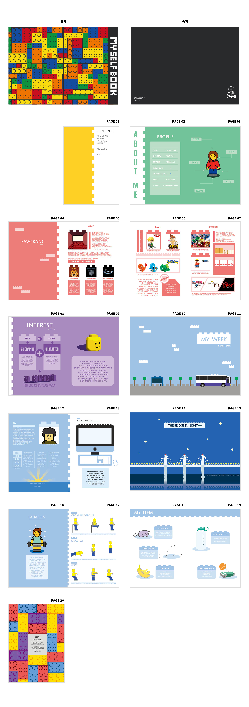

Self-Book Design
목록으로

- 작업년도 : 2014
- 작업범위 : 기획 · 디자인 · 편집 · 일러스트 제작
- 사용툴 : Photoshop · Illustrator · InDesign
- 작업설명 :
LEGO 블록을 모티브로 나를 소개하는 콘셉트의 셀프북(Self-Book) 디자인 프로젝트입니다. 블록이 하나씩 조립되어 형태를 이루듯, 취향·성향·취미·일상 요소들이 모여 ‘나’라는 캐릭터가 완성된다는 메시지를 시각적으로 표현했습니다.
페이지마다 서로 다른 색상과 레이아웃을 적용해 정보의 성격을 구분하고, 일러스트 스타일로 캐릭터와 콘텐츠를 구성했습니다. 최종 결과물은 InDesign을 통해 20페이지 북 디자인으로 완성했습니다.